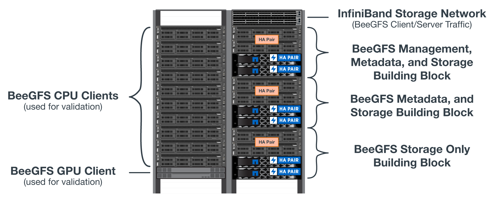
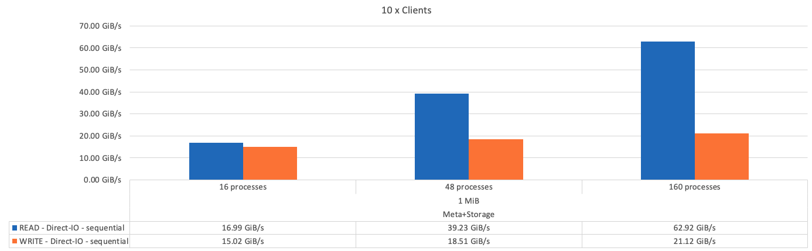
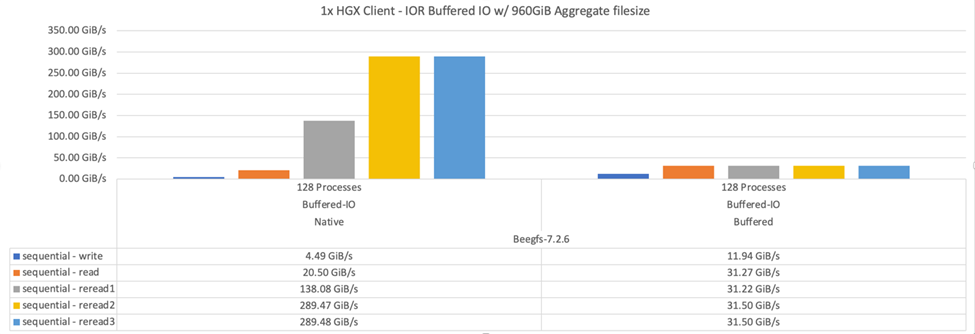
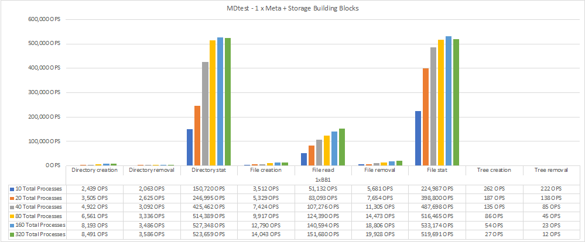

要求變更文件
要求變更文件 編輯此頁面
編輯此頁面 瞭解如何作出貢獻
瞭解如何作出貢獻設計驗證
貢獻者
NetApp解決方案BeeGFS的第二代設計已使用三種建置區塊組態設定檔進行驗證。
組態設定檔包括下列項目：
-
單一基礎建置區塊、包括BeeGFS管理、中繼資料和儲存服務。
-
BeeGFS中繼資料加上儲存建置區塊。
-
BeeGFS純儲存建置區塊。
建置區塊連接至兩個Mellanox Quantum InfiniBand（MQM8700）交換器。十個BeeGFS用戶端也連接到InfiniBand交換器、用來執行綜合基準測試公用程式。
下圖顯示用於驗證NetApp解決方案BeeGFS的BeeGFS組態。

BeeGFS檔案分段
IOR頻寬測試：多個用戶端
IOR頻寬測試使用OpenMPI來執行綜合I/O產生器工具IOR的平行工作（可從以下網站取得 "HPC GitHub"）跨所有10個用戶端節點、移至一或多個BeeGFS建置區塊。除非另有說明：
-
所有測試均使用直接I/O、傳輸大小為1MiB。
-
BeeGFS檔案分段設定為1MB chunksize、每個檔案一個目標。
下列參數用於IOR、區段數經過調整、可將一個建置區塊的Aggregate檔案大小維持在5TiB、三個建置區塊的區段數維持在40TiB。
mpirun --allow-run-as-root --mca btl tcp -np 48 -map-by node -hostfile 10xnodes ior -b 1024k --posix.odirect -e -t 1024k -s 54613 -z -C -F -E -k
下圖顯示單一BeeGFS基礎（管理、中繼資料和儲存）建置區塊的IOR測試結果。

下圖顯示單一BeeGFS中繼資料+儲存建置區塊的IOR測試結果。

下圖顯示單一BeeGFS純儲存建置區塊的IOR測試結果。

下圖顯示使用三個BeeGFS建置區塊的IOR測試結果。

如預期、基礎建置區塊與後續中繼資料+儲存建置區塊之間的效能差異可忽略不計。比較中繼資料+儲存建置區塊與純儲存建置區塊、可看出讀取效能略有提升、因為使用額外的磁碟機做為儲存目標。不過、寫入效能並無顯著差異。若要達到更高的效能、您可以將多個建置區塊一起新增、以線性方式擴充效能。
IOR頻寬測試：單一用戶端
IOR頻寬測試使用OpenMPI、使用單一高效能GPU伺服器執行多個IOR程序、以探索單一用戶端所能達到的效能。
此測試也會比較BeeGFS在用戶端設定為使用Linux核心分頁快取（「tuneFileCacheType = Native」）時的重新讀取行為和效能、以及預設的「緩衝」設定。
原生快取模式會使用用戶端上的Linux核心分頁快取、讓重新讀取作業從本機記憶體產生、而非透過網路重新傳輸。
下圖顯示使用三個BeeGFS建置區塊和單一用戶端的IOR測試結果。


|
這些測試的BeeGFS分段設定為1MB chunksize、每個檔案有八個目標。 |
雖然使用預設的緩衝模式時、寫入和初始讀取效能較高、但對於重讀相同資料多次的工作負載、原生快取模式可大幅提升效能。這項改善的重新讀取效能對於深度學習等工作負載來說非常重要、因為深度學習會在許多時期重讀相同的資料集多次。
中繼資料效能測試
中繼資料效能測試使用MDTest工具（包含在IOR中）來測量BeeGFS的中繼資料效能。測試使用OpenMPI在所有十個用戶端節點上執行平行工作。
下列參數用於執行基準測試、其處理程序總數從10個增加到320個、步驟2個、檔案大小為4K。
mpirun -h 10xnodes –map-by node np $processes mdtest -e 4k -w 4k -i 3 -I 16 -z 3 -b 8 -u
中繼資料效能是先以一到兩個中繼資料+儲存建置區塊來測量、藉由新增額外的建置區塊來顯示效能如何擴充。
下圖顯示含有一個BeeGFS中繼資料+儲存建置區塊的MDTest結果。

下圖顯示含有兩個BeeGFS中繼資料+儲存建置區塊的MDTest結果。

功能驗證
在驗證此架構時、NetApp執行了數項功能測試、包括：
-
停用交換器連接埠、使單一用戶端InfiniBand連接埠故障。
-
停用交換器連接埠、使單一伺服器InfiniBand連接埠故障。
-
使用BMC觸發立即關閉伺服器電源。
-
將節點正常置於待命狀態、並將故障切換服務移轉至其他節點。
-
正常地將節點重新連線、並將服務容錯回復至原始節點。
-
使用PDU關閉其中一個InfiniBand交換器。所有測試都是在壓力測試進行期間執行、並在BeeGFS用戶端上設定「SysSessionChecksEnabled:假」參數。未發現I/O錯誤或中斷。
|
|
有已知問題（請參閱 "Changelog"）當BeeGFS用戶端/伺服器RDMA連線意外中斷時、可能是因為主要介面遺失（如「connInterfacesFile」中所定義）、或是BeeGFS伺服器故障；作用中用戶端I/O在恢復前最多可掛斷10分鐘。若BeeGFS節點在規劃維護時正常放置在待命或使用TCP、則不會發生此問題。 |
NVIDIA DGX A100 SupermPOD驗證
NetApp已使用類似的BeeGFS檔案系統（由三個建置區塊組成、並套用中繼資料加上儲存組態設定檔）、驗證NVIDIAs DGX A100 SupermPOD的儲存解決方案。此NVA所描述的解決方案、需要測試資格、測試20部DGX A100 GPU伺服器、執行各種儲存設備、機器學習和深度學習基準測試。
如需詳細資訊、請參閱 "NVIDIA DGX超級POD與NetApp合作"。